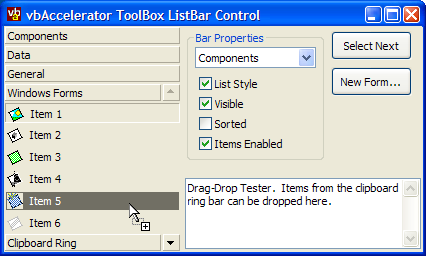

VB5 ToolBox ListBar Control Binary (30K)
VB5 ToolBox ListBar Control Binary (30K)
 VB5 ToolBox ListBar Demonstration (18K)
VB5 ToolBox ListBar Demonstration (18K)
 VB5 ToolBox ListBar Full Source (75K)
VB5 ToolBox ListBar Full Source (75K)
 VB6 ToolBox ListBar Control Binary (30K)
VB6 ToolBox ListBar Control Binary (30K)
 VB6 ToolBox ListBar Demonstration (17K)
VB6 ToolBox ListBar Demonstration (17K)
 VB6 ToolBox ListBar Full Source (74K)
VB6 ToolBox ListBar Full Source (74K)
 Bugs: 3 / 3
Bugs: 3 / 3
 Issues: 0 / 0
Issues: 0 / 0
 Questions: 0 / 0
Questions: 0 / 0
 12 Feb 2003
12 Feb 2003
First Posted
 vbAccelerator Visual Studio Style Tab Control
vbAccelerator Visual Studio Style Tab Control

vbAccelerator Visual Studio Style ToolBox ListBar
Create tabbed bars of tools for your application
This control provides a full implementation of a Visual Studio-style List Bar which holds lists of controls. Bars and items can be dragged around the control, and items can be dragged, pressed or double-clicked to add the item to an object.
Quick Start
The ToolBox List Bar control has the following object hierarchy:

ToolBox ListBar Control Object Model
There are three main areas in using the control:
- Configuring the Control
- Adding and Removing Bars and Items
- Responding to Events
These will be covered in turn.
Configuring the Control
The control supports most of the basic properties of a VB control, including as BackColor, ForeColor, Font, BorderStyle, Align and ScaleMode. These can be set at design time or runtime.
Icons for the items are sourced from an ImageList. To add an ImageList to the control, set the ImageList property at run-time. If you're using a ComCtl32.DLL ImageList, then set this property to the hImageList handle, otherwise set it to the ImageList control instance.
Adding and Removing Bars and Items
To build a bar, you need to start with the correct bottles. So, a bottle of Bombay Sapphire or Tanqueray 10, some Grey Goose vodka, Absolut Citron, Makers Mark Bourbon, Myers's Dark Rum, Noilly Prat, Cointreau, Creme de Mure... Oops, I appear to have got off on the wrong subject. Actually adding, removing and accessing bars is done through the Bars collection provided by the control using the standard collection methods: Add, Remove, Item and Count. The only things to note are that you must provide a unique Key for the bar and that For..Each enumeration is not supported at this time.
The Add and Item properties return a cToolBoxBar object which can be used to set the properties of the bar and move it around. Bar properties and methods are as follows:
- OwnerControl
Returns the owning control of this bar. - Caption
Gets/sets the caption of this bar - Sorted
Gets/sets whether items are sorted alphabetically within the bar. - Visible
Gets/sets whether this bar is visible in the control or not. - Tag
Gets/sets a string value associated with the bar. - ItemData
Gets/sets a long value associated with the bar. - Index
Returns the index of the bar within the control. - Key
Returns the key for this bar. - NextBar
Gets a reference to the next bar along in the control. By default, this returns the next visible bar, however if you set the optional bVisibleOnly parameter to False you can find the next bar along regardless of visibility. - PreviousBar
Same as NextBar but for the previous bar in the control. - MoveNext
Moves this bar to the next position along in the control. - MovePrevious
Same as MoveNext but for the previous position. - Items
Returns the cToolItemCollection of items within this bar, allowing you to add, insert, remove and find items within the bar. - SelectedItem
Returns the cToolItem which is selected within the bar.
Adding and removing items from bars is accomplished using the cToolItemCollection returned by the Items property of the bar. This works in the same way as the cToolBoxBarCollection (and again Keys are mandatory and the For..Each enumeration is not supported at this time). Note that item keys must be unique across all bars, since you can shift an item between bars using drag and drop.
The Add and Item properties return a cToolItem object which can be used to set the properties of the item and move it around. Bar properties and methods are as follows:
- OwnerControl
Returns the owning control of this item. - OwnerBar
Returns the owning bar of this item. - Caption
Gets/sets the caption of this item. - IconIndex
Gets/sets the zero-based index of the icon within the ImageList associated with the control for this item. - Enabled
Gets/sets whether this item is enabled or not. - Selected
Gets/sets whether this item is selected or not. - CanDrag
Gets/sets whether this item can be dragged or not. - Tag
Gets/sets a string value associated with the item. - ItemData
Gets/sets a long value associated with the item. - Index
Returns the index of the item within its bar. - Key
Returns the key for this item. - NextItem
Gets a reference to the next item along in the bar. - PreviousItem
Same as NextItem but for the previous item in the bar. - MoveNext
Moves this item to the next position along in the bar. - MovePrevious
Same as MoveNext but for the previous position. - EnsureVisible
Scrolls the bar containing this item if it is not visible in the control.
Responding to Events
The control raises the following events:
- BarClick
Raised when a bar is clicked by the user. Provides the bar that was clicked and the mouse button, shift state and coordinates of the click. - BarDblClick
Raised when a bar is double clicked by the user. - BarSelected
Raised when a bar is selected by the user. Note that this event does not fire if you select a bar in code using the Selected property of a bar. - ItemClick
Same as BarClick except for an item. Note that this event is also raised if the user clicks a non-item area within a bar, in which case the Item object will be Nothing. - ItemDblClick
Same as BarDblClick except for an Item. - ItemSelected
Same as BarSelected except for an item. - KeyDown
The standard KeyDown event for the control. You can prevent the control from processing the key by modifying the Key and Shift values. By default the control processes the Up, Down, PageUp, PageDown, Home and End keys. - KeyPress
The standard KeyPress event for the control. - KeyUp
The standard KeyUp event for the control.
Drag and Drop
When an item has the CanDrag property set true (which is the default), the user can drag the item within the control itself or onto any control which supports drag and drop in the project. The control sets customised Drag data which you can use to determine whether to allow the item to be dropped onto a particular control. The formats set for an item are as follows:
- tbbCfItemIdentifier
The data contains an identifier to the item within the control. You can use the ItemFromDragData method of the control to get a cToolItem object from this data, as follows:Private Sub ctl_OLEDragDrop( _ Data As DataObject, _ Effect As Long, _ Button As Integer, _ Shift As Integer, _ x As Single, y As Single) If (Data.GetFormat(tbbCfItemIdentifier)) Then ' Custom formats can only be obtained as a byte array: Dim b() as Byte b = Data.GetData(tbbCfItemIdentifier) ' Get the item itself: Dim cT As cToolItem Set cT = tbxLeft.ItemFromDragData(b) ' Now can use cT to work out whether to allow drag-drop ' or not. End If End Sub - tbbCfItemTag
The data contains the tag of the item within the control, as a byte array. - vbCFText
The caption of the item as a string.
Wrap Up
That concludes the details of using the control. Another sample of using this control is available demonstrating how to add the control to a pinnable Visual Studio Style Tabs control to create a full Visual Studio style Clipboard Ring.